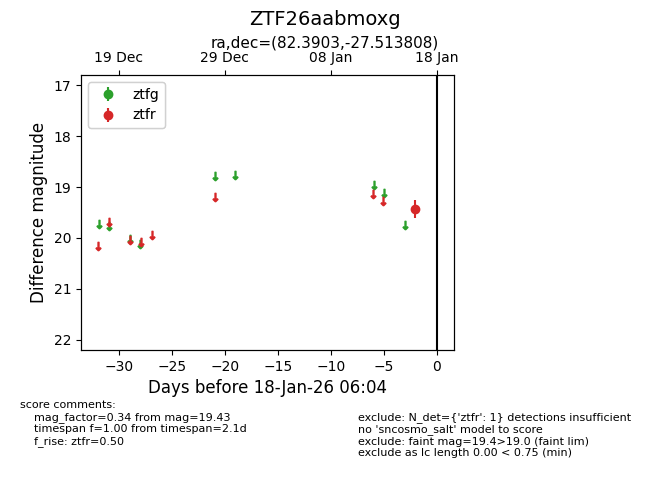
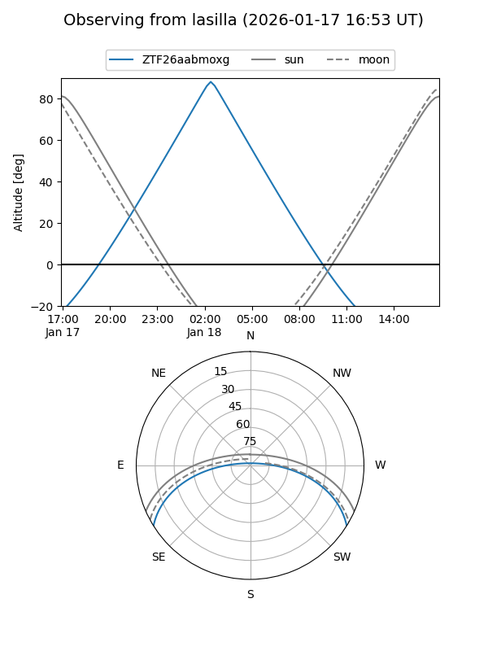
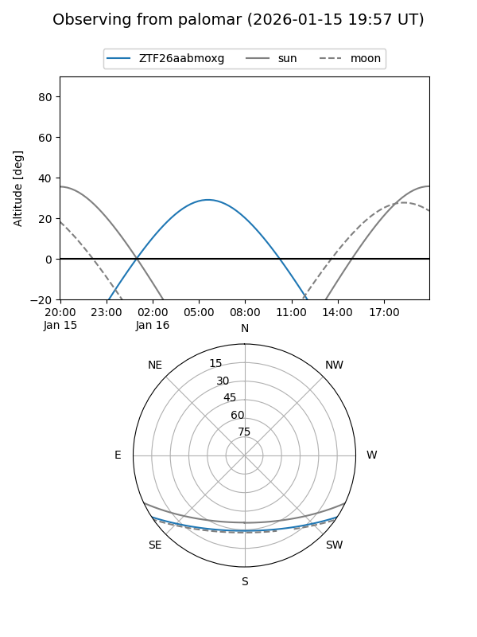

ZTF26aabmoxg
Target ZTF26aabmoxg at 2026-01-18 06:05
Aliases and brokers:
FINK: link
Lasair: link
ALeRCE: link
alt names
ZTF26aabmoxg (ztf,fink_ztf)
Coordinates:
equatorial (ra, dec) = 82.3903,-27.51381
equatorial (HMS+DMS) = 05:29:33.68,-27:30:49.71
galactic (l, b) = (230.9158,-29.12250)
Flags:
Photometry:
last ztfr=19.43
1 ztfr detections
Lightcurve

Visibility


Additional plots